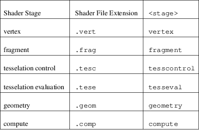
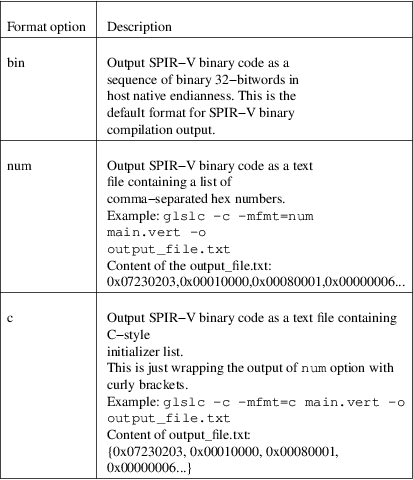
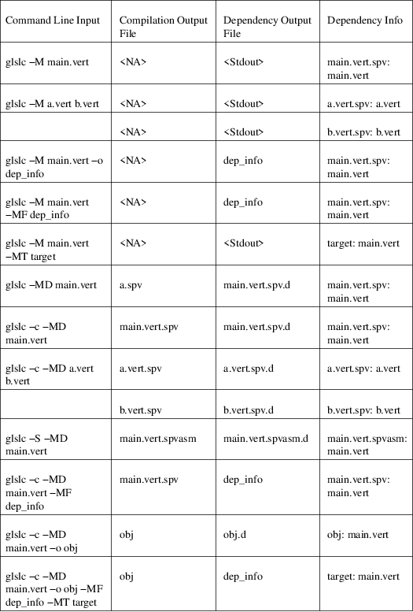

‘glslc‘ − A command−line GLSL/HLSL to SPIR−V compiler with Clang−compatible arguments.
glslc
[−−help]
glslc [−h]
glslc [−−show−limits]
glslc
[−c|−S|−E]
[−x ...] [−std=standard]
[ ... options for resource bindings ... ]
[−fhlsl−16bit−types]
[−fhlsl−offsets]
[−fhlsl−functionality1]
[−fentry−point=<name>]
[−fauto−map−locations]
[−finvert−y]
[−flimit=...]
[−flimit−file
<resource−limits−file>]
[−fshader−stage=...]
[−−target−env=...]
[−−target−spv=...]
[−g]
[−O0|−Os]
[−Idirectory...]
[−Dmacroname[=value]...]
[−w] [−Werror]
[−o outfile]
shader...
Input file
languages
glslc accepts both GLSL/HLSL source and SPIR−V
assembly files as inputs.
Shader stage
specification
glslc provides three ways to specify the shader stage of a
GLSL source file: −fshader−stage=<stage>,
#pragma shader_stage(<stage>), and file extension. The
−fshader−stage= option overrides #pragma
shader_stage(), which overrides the file extension.
Shader stages can be specified by naming a file with an appropriate extension as shown in the following table. −fshader−stage= and #pragma shader_stage(), on the other hand, enable you to specify shader stages from the command line and within the source file. Possible stages for them are also listed in the following table. Details about −fshader−stage= can be found in its own section.
Table 1. Shader Stage Selection

#pragma shader_stage() relies on the #pragma preprocessor directive; thus, the token inside shader_stage() is not subject to preprocessor macro expansion. It must be exactly one of the stages in the above table.
#pragma shader_stage() behaves as follows:
• The first #pragma shader_stage() directive in a translation unit must precede any non−preprocessor tokens.
• If there is more than one #pragma shader_stage() directive in the same translation unit, all the stages specified must be the same. Otherwise, glslc will issue an error.
SPIR−V
assembly files
SPIR−V assembly input files should follow the
syntax
<https://github.com/KhronosGroup/SPIRV−Tools/blob/master/syntax.md>
defined in the SPIRV−Tools
<https://github.com/KhronosGroup/SPIRV−Tools>
project and have the .spvasm extension. Command line options
treat SPIR−V assembly files differently; some may
ignore them, e.g., −E, −S, and some may even
treat them not as SPIR−V assembly files, e.g.,
−fshader−stage=.
Output file
naming
If a name is specified via −o, the output file will be
given that name. Otherwise,
• If a compilation stage selection option is given (−S or −c), there will be one output file generated per input shader file. The generated output file will end with a file extension that matches the compilation stage, which is .spvasm for −S and .spv for −c. The name will depend on the original file’s name and extension.
• If the input file has a shader stage selection extension, the output file will be named as by appending the file extension for the compilation stage to the input file’s name. E.g., glslc −c foo.vert will generate foo.vert.spv, and glslc −S bar.frag will generate bar.frag.spvasm.
• Otherwise, the output file will be named as by replacing the input file’s file extension, if any, with the file extension for the compilation stage. E.g., glslc −c foo will generate foo.spv, and glslc −S bar.glsl will generate bar.spvasm.
• If no compilation stage is selected, the output file will be named a.spv.
Overall
Options
−−help, −h
Option −−help or −h tells the glslc
compiler to display all available options and exit.
−−show−limits
−−show−limits shows default resource
limits for shader compilation. The syntax is the same as
accepted by −flimit= and for the contents of the file
specified by −flimit−file.
−o
−o lets you specify the output file’s name. It
cannot be used when there are multiple files generated. A
filename of − represents standard output.
Language and
Mode Selection Options
−finvert−y
Inverts position.Y output in a vertex shader.
−flimit=
−flimit=<resource−limits> lets you specify
resource limits. The argument should be a sequence of limit
name, integer value pairs. Tokens should be separated by
whitespace. If the same limit is specified several times,
only the last setting takes effect.
Use −−show−limits to show the default values, and example syntax.
This option affects all compiled shaders.
−flimit−file
−flimit−file
<resource−limits−file> lets you specify
resource limits in a file. The syntax of the file contents
is the same as the argument to −flimit= and the output
of −−show−limits. This option accepts
Glslang resource configuration files, e.g. as emitted by
glslangValidator −c.
This option affects all compiled shaders.
−fshader−stage=
−fshader−stage=<stage> lets you specify
the shader stage for one or more inputs from the command
line.
Possible values for <stage> are listed in the Shader Stage Selection table.
−fshader−stage= behaves as follows:
• −fshader−stage= sets the shader stage for subsequent input files. It does not affect the stages of any preceding inputs on the command line.
• When supplying more than one −fshader−stage= argument, the most recent argument preceding an input file applies.
• A shader file not ending with known shader file extensions must have a −fshader−stage= argument ahead of it to specify its stage.
• If there is a −fshader−stage= before a file in which there is a #pragma shader_stage() directive, the directive is ignored and the −fshader−stage= argument is used instead.
• If there is a −fshader−stage= before a file with a known shader file extension, the file extension is ignored and the −fshader−stage= argument is used instead.
Caution
−fshader−stage= overrides file extension; that
means it should not be used together with SPIR−V
assembly files because glslc will treat the given
SPIR−V assembly files as GLSL source code of the given
shader stage. If you need to supply both SPIR−V
assembly files and −fshader−stage= on the same
command line, please put SPIR−V assembly files ahead
of the first −fshader−stage=, since
−fshader−stage= only affects the treatment of
subsequent files.
−std=
−std=<value> lets you specify a shader version
and profile on the command line. <value> can be any
valid concatenation of a GLSL version number and profile,
e.g., 310es, 450core, etc. The profile can be omitted as
allowed by GLSL, e.g., 450.
−std= behaves as follows:
• −std= affects the version of all GLSL inputs passed to glslc.
• −std= is ignored for HLSL inputs.
• −std= overwrites #version directives in all input shaders, including those preceding the argument.
• If a −std= argument specifies a different version from a #version directive in an input file, glslc will issue a warning.
• If multiple −std= arguments are specified on the command line, only the last one takes effect.
Caution
−std= does not affect the #version directive in the
preprocessed output. That is, when −std= specifies a
version different from the shader source code, the #version
directive in preprocessed output will still be the one in
the source code. But −std= does affect the behavior of
#line directives in the preprocessed output. Behavior of
#line directives will follow the version specified by
−std=.
−−target−env=
−−target−env=<value> lets you
specify a target environment on the command line. This
affects the generation of warnings and errors. The
<value> can be one of the following:
• vulkan: create SPIR−V under Vulkan 1.0 semantics.
• vulkan1.0: create SPIR−V under Vulkan 1.0 semantics.
• vulkan1.1: create SPIR−V under Vulkan 1.1 semantics.
• vulkan1.2: create SPIR−V under Vulkan 1.2 semantics.
• opengl: create SPIR−V under OpenGL 4.5 semantics.
• opengl4.5: create SPIR−V under OpenGL 4.5 semantics.
Generated code uses SPIR−V 1.0, except for code compiled for Vulkan 1.1, which uses SPIR−V 1.3, and code compiled for Vulkan 1.2, which uses SPIR−V 1.5.
If this option is not specified, a default of vulkan1.0 is used.
Note: Support for OpenGL compatibility profile, opengl_compat, has been removed.
−−target−spv=
−−target−spv=<value> lets you
specify the SPIR−V version to be used by the generated
module. The default is to use the highest version of
SPIR−V required to be supported by the target
environment. The defaults for specific Vulkan target
environments are as follows: SPIR−V 1.0 for Vulkan
1.0, SPIR−V 1.3 for Vulkan 1.1, and SPIR−V 1.5
for Vulkan 1.2.
The <value> can be one of the following:
• spv1.0
• spv1.1
• spv1.2
• spv1.3
• spv1.4
• spv1.5
• spv1.6
−x
−x lets you specify the language of the input shader
files. Valid languages are glsl and hlsl. If the file
extension is hlsl then the default language is HLSL.
Otherwise the default is 'glsl'.
Note: HLSL compilation will use HLSL packing (offset) rules for variables that are vertex shader outputs, and inputs and outputs of both geometry and pixel shaders.
Compilation
Stage Selection Options
−c
−c tells the glslc compiler to run the preprocessing
and compiling stage. Each input shader file results in a
SPIR−V binary file; these SPIR−V binary files
are named by the rules in the Output File Naming
section.
−E
−E tells the glslc compiler to run only the
preprocessing stage. It overrides −c and −S.
Preprocessed output is written to standard output, while
preprocessing errors are written to standard error. If
multiple input shader files are given, their preprocessed
output are all written to standard output, in the order
specified on the command line.
glslc will do nothing for SPIR−V assembly files with this option.
−S
−S tells the glslc compiler to run the preprocessing,
compiling, and then disassembling stage. It overrides
−c. Each input shader file results in a SPIR−V
assembly file; these SPIR−V assembly files are named
by the rules in the Output File Naming
section.
glslc will do nothing for SPIR−V assembly files with this option.
No
Compilation Stage Selection
If none of the above options is given, the glslc compiler
will run preprocessing, compiling, and linking
stages.
Warning
Linking of multiple input shader files are not supported
yet.
Preprocessor
Options
−D
−Dmacroname[=[value]] lets you define a preprocessor
macro before input shader files are preprocessed. If value
is omitted, the macro is defined with an empty
value.
−I
−Idirectory or −I directory adds the specified
directory to the search path for include files. The
directory may be an absolute path or a relative path to the
current working directory.
Code
Generation Options
−g
Requests that the compiler place source−level debug
information into the object code, such as identifier names
and line numbers.
This option restrains −O from turning on the strip−debug−info optimization pass.
Note
Currently this option has no effect. Full functionality
depends on glslang support for generating debug
info.
−O0,
−Os
−O specifies which optimization level to
use:
• −O0 means "no optimization". This level generates the most debuggable code.
• −O means the default optimization level for better performance.
• −Os enables optimizations to reduce code size.
−mfmt=<format>
−mfmt=<format> selects output format for
compilation output in SPIR−V binary code form.
Supported options are listed in the binary output format
options table. This option is only valid to be used when the
compilation output is SPIR−V binary code. Specifying
any options listed below when the output is not SPIR−V
binary code, like disassembly (with −S specified),
text (with −M, −MM or −E specified) will
trigger an error.
Table 2. Binary Output Format Options

−fhlsl−16bit−types
Enables 16bit types for HLSL
compilation.
−fhlsl−offsets
Use HLSL packing rules instead of GLSL rules when
determining offsets of members of blocks. This option is
always on when compiling for
HLSL.
−fhlsl−functionality1
Enable extension SPV_GOOGLE_hlsl_functionality1, and
instructs the compiler to:
• Annotate HLSL semantic string decorations on interface objects
• Explicitly record the association of a UAV resource with its companion counter buffer.
This option can also be spelled with an underscore: −fhlsl_functionality1.
−fentry−point=<name>
−fentry−point=<name> lets you specify the
entry point name. This is only significant for HLSL
compilation. The default is
"main".
−fauto−map−locations
For GLSL compilation, option
−fauto−map−locations directs the compiler
to automatically assign location numbers to
user−defined stage input and output variables if not
explicitly specified by the shader
source.
For HLSL compilation, this option is on by default.
Client APIs normally require adjacent stages to agree on their I/O interface. The compiler only sees one stage at a time, so it is strongly recommended that you avoid relying on this option to assign locations.
Instead, an explicit binding number should be specified in the shader source, as follows:
• In a GLSL shader, use a location layout qualifier:
layout(location = 1) in vec4 x;
• In an HLSL shader, use a vk::location attribute:
[[vk::location(1)]]
float4 FooShader(
[[vk::location(0)]] float4 a,
[[vk::location(2)]] float4 b) : COLOR0 {
return a + b;
}
[[option−fpreserve−bindings ==== −fpreserve−bindings
Directs the optimizer to preserve bindings declarations, even when those bindings are known to be unused.
Warning
and Error Options
−w
−w suppresses all warning output from glslc. Any
warning that would have been generated is silently
ignored.
−Werror
−Werror forces any warning to be treated as an error
in glslc. This means that all warning: messages are shown as
error: and any warnings will cause a non−zero exit
code from glslc. If −w is specified the warnings
generated are suppressed before they are converted to
errors.
Dependency
Generation Options
−M or −MM
−M generates make dependencies. It outputs a
rule suitable for make describing the dependencies of
the input file. Instead of outputting the result of
preprocessing, the preprocessor outputs one make rule
containing the SPIR−V object file name for that source
file, a colon, and the names of all the included
files.
Unless specified explicitly (with −MT), the SPIR−V object file name in the generated make rules follows the rules of Output File Naming as in −c compilation stage.
Specifying −M implies −E, and suppresses warnings with an implicit −w. By default the output will be written to stdout, unless −MF or −o is specified.
The dependency info file name can be specified by −o and −MF options. When both are specified, −o option is ignored.
Specifying multiple input files is valid when the make rules are written to stdout, which means neither −MF nor −o is specified. When −o or −MF is specified, only one input file is allowed.
−MM is an alias for −M.
E.g., glslc −M main.vert will dump main.vert.spv: main.vert <other included files> to stdout. More examples are listed in Dependency Generation Examples
−MD
−MD tells the glslc compiler to both compile the
source and generate make dependencies. Dependencies
are written to a file whose name is determined as follows:
If option −MF is specified, use its argument.
Otherwise, use the filename formed by appending .d to
the name of the file containing compilation
results.
Specifying multiple input files is valid when neither −MF nor −o is specified. When −o or −MF is specified, only one input file is allowed.
E.g., glslc −c −MD main.vert will generate main.vert.spv as the SPIR−V object file and main.vert.spv.d as the dependency info file. More examples are listed in Dependency Generation Examples
−MF
−MF lets you specify the dependency info file name
when used with −M or −MD. This option is invalid
when used with multiple input
files.
E.g., glslc −c −MD main.vert −MF dep_info will generate main.vert.spv as the SPIR−V object file and dep_info as the dependency info file.
−MT
−MT lets you specify the target of the rule emitted by
dependency generation when used with −M or −MD.
This option is invalid when used with multiple input
files.
E.g., glslc −M main.vert −MT target will dump following dependency info to stdout: target: main.vert <other dependent files>.
Table 3. Dependency Generation Examples

Resource
Binding Options
−fauto−bind−uniforms
Option −fauto−bind−uniforms directs the
compiler to automatically assign binding numbers to uniform
variables, when an explicit binding is not specified in the
shader source.
An explicit binding number can be specified in the shader source by using a binding layout qualifier. For example:
layout(binding = 12) uniform texture2D;
−fhlsl−iomap
Option −fhlsl−iomap directs the compiler to use
HLSL register assignments as binding
values.
−fimage−binding−base
Option −fimage−binding−base [stage] base
sets the lowest automatically assigned binding for images.
If a stage is specified, only affects the specified
stage.
For HLSL, sets one less than the base.
−fsampler−binding−base
Option −fsampler−binding−base [stage] base
sets the lowest automatically assigned binding for samplers.
If a stage is specified, only affects the specified
stage.
For HLSL, sets one less than the base.
−ftexture−binding−base
Option −ftexture−binding−base [stage] base
sets the lowest automatically assigned binding for textures.
If a stage is specified, only affects the specified
stage.
For HLSL, sets one less than the base.
−fubo−binding−base
Option −fubo−binding−base [stage] base
sets the lowest automatically assigned binding for Uniform
Buffer Objects (GLSL) or Cbuffers (HLSL). If a stage is
specified, only affects the specified
stage.
For HLSL, sets one less than the base.
−fcbuffer−binding−base
Option −fcbuffer−binding−base [stage] base
is the same as −fubo−binding−base [stage]
base.
−fssbo−binding−base
Option −fssbo−binding−base [stage] base
sets the lowest automatically assigned binding for Shader
Storage Buffer Objects (GLSL). If a stage is specified, only
affects the specified stage.
This only affects GLSL compilation.
−fuav−binding−base
Option −fuav−binding−base [stage] base
sets one less than the lowest automatically assigned binding
for Unordered Access Views (UAV). If a stage is specified,
only affects the specified
stage.
This only affects HLSL compilation.
−fresource−set−binding
Option −fresource−set−binding [stage]
<reg0> <set0> <binding0> sets the
descriptor set and binding for an HLSL resource, by register
name. To specify settings for more registers, append their
triples consisting of register name, descriptor set, and
binding.
Example:
#
For a texture in register t1, use set 1 binding 0.
# For a texture in register t2, use set 1 binding 3
glslc −x hlsl foo.frag
−fresource−set−binding t1 1 0 t2 1
3
If a stage is specified, only affects the specified stage.
#
Same as the previous example, but the settings only apply
# to fragment (pixel) shaders.
glslc −x hlsl foo.frag
−fresource−set−binding frag t1 1 0 t2 1
3
Source−filename−based
#line and __FILE__
This section describes how the glslc compiler extends the
syntax for the #line directive and the __FILE__ macro. By
default, the glslc compiler enables the
GL_GOOGLE_cpp_style_line_directive extension. It will
generate this extended syntax in the preprocessed output
(obtained via the −E
option).
Warning
This section is still evolving. Expect
changes.
GLSL specifications have a notion of source strings.
The source for a single shader is an array of strings of characters from the character set. A single shader is made from the concatenation of these strings.
— Section 3.2 of both version 3.30 and 4.50
With the above notion, the second parameter to the #line directive should be a constant integer expressions representing the source string number. Also the __FILE__ macro will "substitute a decimal integer constant that says which source string number is currently being processed."
The glslc compiler implements the standard #line and __FILE__ syntax. It also provides an extension, GL_GOOGLE_cpp_style_line_directive, to allow source filenames to be used instead of integer source string indices. Specifically, the #line directive can have, after macro substitution, one of the following three forms:
#line
line−number
#line line−number
integer−source−string−index
#line line−number
"source−filename"
where source−filename can be any combinations of characters except double quotation marks. (Note that according to the GLSL specification, "there are no escape sequences or other uses of the backslash beyond use as the line−continuation character".)
And if source−filename−based #line is used, the __FILE__ macro expands to a string whose contents are the filename quoted with double quotation marks. The filename is dertermined as the last of
• The filename given to the glslc compiler,
• The filename argument of the most recent #line directive, if any.
#include
The glslc compiler extends GLSL with the include syntax by
turning on the GL_GOOGLE_include_directive extension. It
will preprocess and substitute #include directives properly
with the following
behaviors.
Warning
This section is still evolving. Expect
changes.
If #include directives are used in a shader, there will be an #extension GL_GOOGLE_include_directive : enable line generated into the preprocessed output.
The GL_GOOGLE_cpp_style_line_directive extension is implicitly turned on by the GL_GOOGLE_include_directive extension.
The file argument to #include must be enclosed in double quotes. It must be a relative path, using whatever path separator the OS supports. However, the last path element — the name of the file itself — must not contain either '/' or '\', regardless of which path separator is used. This will not be flagged as an error but will instead trigger undefined behavior. For example, let’s say there is a file named f\ilename.vert on a Unix OS. It is not possible to craft a #include that includes that file.
Furthermore, it is not possible to escape any characters in a #include directive, so the file argument cannot contain any special characters that need escaping in C.
The file argument is a relative path that is matched first against the including file’s own directory and then against all −I arguments in order of their appearance on the command line. If the file cannot be found, glslc aborts with an error.